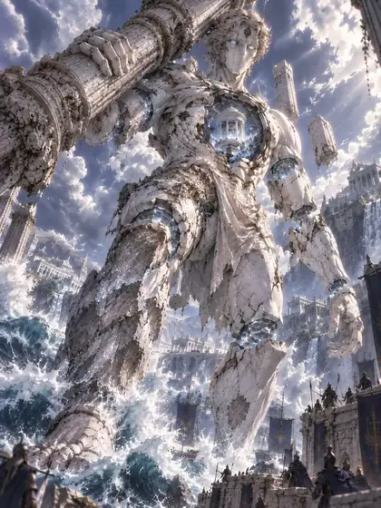

Talos
6HP
5DMG
1RNG
1SPD
18COST
Skills
Mechanism: Cannot actively attack actionable units (it may attack Melodies) and can only move toward the enemy Main Melody. Every two attacks received, move in the direction chosen by the last damage source (this is not active movement). Only lose HP when adjacent to the allied Main Melody. If other actionable units block this movement, damage all blockers.
Quote
“Even a bronze heart fears a nail”
Skills and stats come from the current test build and may change before launch.